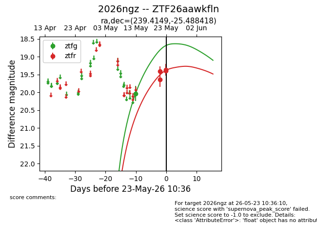
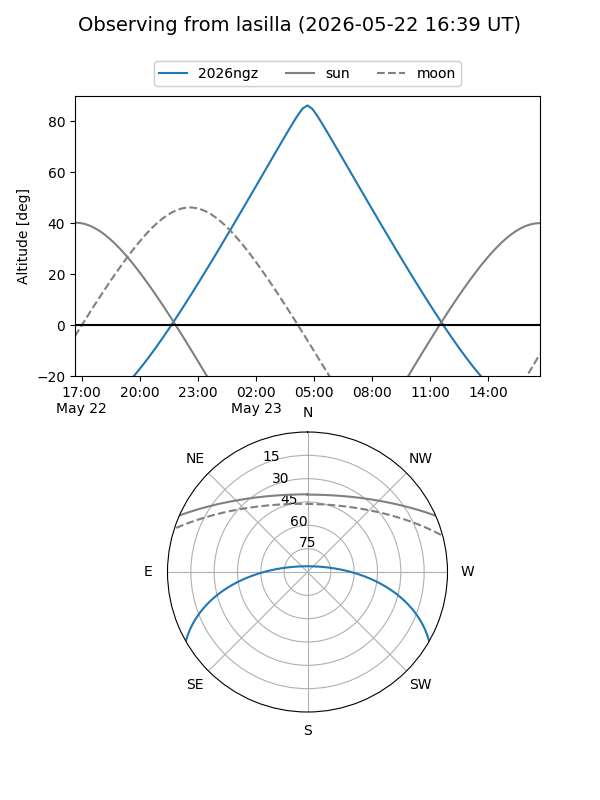
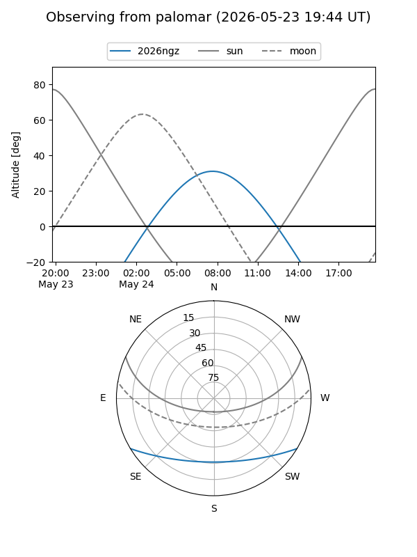
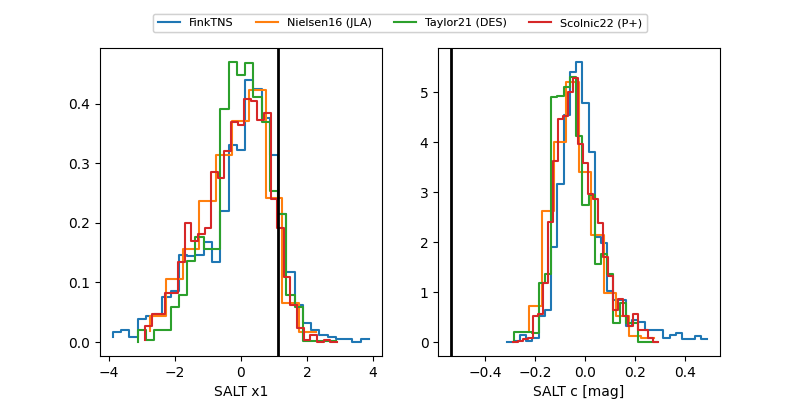

2026ngz
Target 2026ngz at 2026-05-23 10:37
Aliases and brokers:
lsst-FINK: link
lsst-Lasair: link
lsst-ALeRCE: link
ztf-FINK: link
ztf-Lasair: link
ztf-ALeRCE: link
TNS: link
YSE: link
alt names
ZTF26aawkfln (ztf,fink_ztf)
2026ngz (tns,yse)
Coordinates:
equatorial (ra, dec) = 239.4149,-25.48842
equatorial (HMS+DMS) = 15:57:39.57,-25:29:18.30
galactic (l, b) = (347.4701,+20.86793)
Flags:
TNS confirmed: nan
Photometry:
last ztfg=20.03, ztfr=19.39
1 ztfg, 4 ztfr detections
Lightcurve

Visibility


Additional plots
